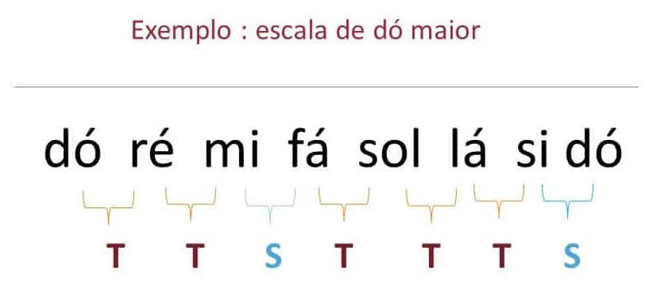

O que é uma escala musical?
Uma escala musical é uma sequência de notas musicais organizadas em uma ordem específica, geralmente ascendentes ou descendentes, que formam a base para a criação de melodias e harmonias. As escalas são fundamentais na música, pois fornecem o material sonoro a partir do qual os músicos constroem suas composições e improvisações.
Tipos de escalas musicais
Existem diversos tipos de escalas musicais, cada uma com suas características e sonoridades distintas. Alguns exemplos incluem:
- Escala maior: Possui uma sonoridade alegre e brilhante, sendo composta por sete notas.
- Escala menor: Tem uma sonoridade mais melancólica e introspectiva, também composta por sete notas.
- Escala pentatônica: Composta por cinco notas, é amplamente utilizada em diversos estilos musicais.
- Escala cromática: Inclui todas as doze notas da música ocidental, abrangendo semitons consecutivos.
Importância das escalas na música
As escalas são essenciais para a compreensão da teoria musical e para o desenvolvimento das habilidades musicais. Elas ajudam os músicos a entenderem a relação entre as notas, a criar melodias coerentes e a improvisar de forma criativa. Além disso, o estudo das escalas permite explorar diferentes tonalidades e estilos musicais.
Exemplo de uma escala maior
